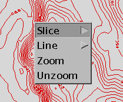
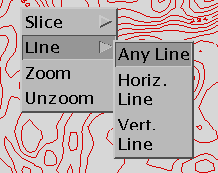
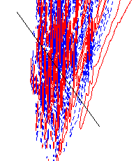
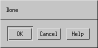
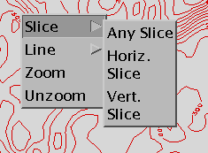

This file discusses the procedures for mouse
slicing and other mouse operations

Slicing
Procedures:
- It is first necessary to create a 2-D plot.
- Once you have created a plot place your mouse over the IVE plot
window and press the 3rd mouse button. This action will pop up a
menu
- Select slice
- Select the type of slice you would like This will pop up a new
Done Widget. (Horizontal and Vertical refer to directions in
the plot window, not in real space)
- Draw a line on the plot window while holding down the first
mouse button. This indicates the location of the slice in the two
plotted dimentions. You may move the line into the correct spot by
dragging one end point at a time while holding down the left mouse
button.


- Select OK from the Done Widget. 
Drawing Lines on the Plot
Procedures:
- It is first necessary to create a 2-D plot.
- Once you have created a plot place your mouse over the IVE plot
window and press the 3rd mouse button. This action will pop up a
menu
- Select line
- Select the type of line you would like This will pop up a new
Done Widget. (Horizontal and Vertical refer to directions in
the plot window, not in real space)
- Draw a line on the plot window while holding down the first
mouse button. You may move the line into the correct spot by
dragging one end point at a time while holding down the left mouse
button.

- Select OK from the Done Widget.
Other Mouse and Keyboard Controls
- Window Shuffeling (useful after RESIZE=full)
- To raise the Ive Plot Window place your pointer in the window,
hold the Control key down click the first mouse button
- To lower the Ive Plot Window place your pointer in the window,
hold the Control key down click the third mouse button
- Stopping IVE Processing
- To stop IVE from proceeding with it's current function place
your pointer in the plot window and press both the Control and c
buttons at the same time. (If this is done when IVE is not busy a
Quit window will appear)_
back to index